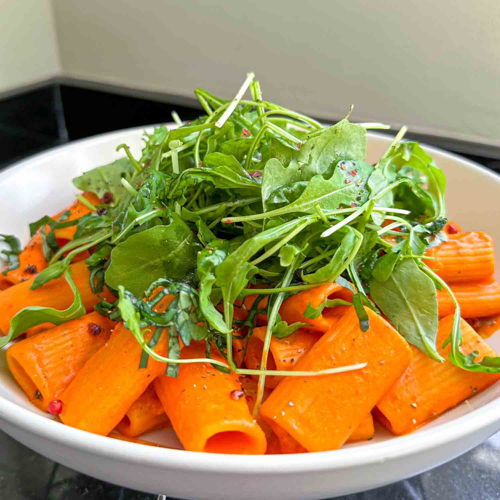

Roasted Red Pepper and Feta Pasta Recipe

This quick and easy pasta dish comes together in less than 15 minutes. The sauce itself doesn’t require any cooking and only uses 3 ingredients: jarred red peppers, feta and garlic. Add some rocket for freshness (and veg!) and you’ve got yourself a pretty dreamy dinner.
Ingredients
- 200g dried pasta of choice
- 300g jarred roasted red peppers (drained weight)
- 100g feta
- 1 garlic clove
- 10g fresh basil leaves, thinly sliced
- 2 handfuls rocket
- extra-virgin olive oil
- sprinkle of pink peppercorns, optional
Steps
- Bring a large pot of water to the boil. Season generously with salt and cook your pasta according to the package instructions, then drain, reserving a ladleful or two of the pasta cooking water.
- Meanwhile, place the roasted red peppers, feta and garlic in a blender and blitz until nice and smooth.
- Pour the sauce into the pasta, along with a splash of the pasta cooking water, and toss over a medium heat until the sauce nicely coats the pasta, adding more pasta water as necessary.
- Divide the pasta between bowls and top with the basil and rocket. Finish with a drizzle of extra-virgin olive oil and a pinch of salt and pink peppercorns.